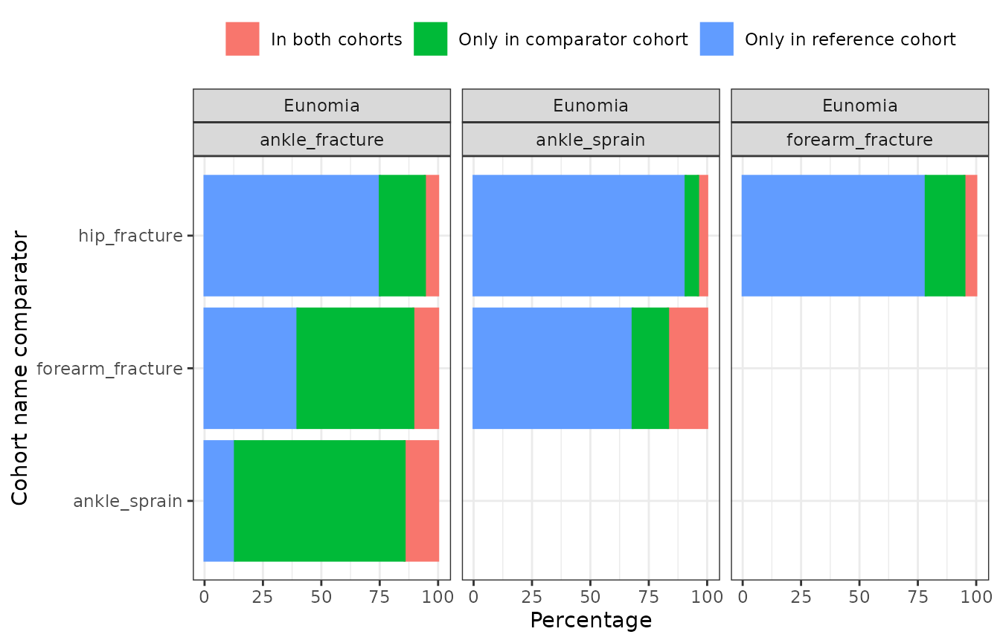
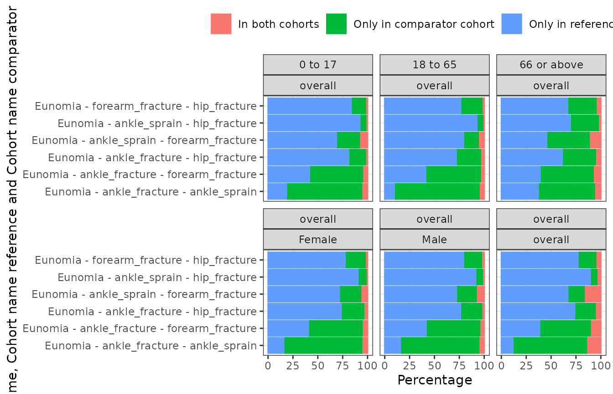

Cohort diagnostics
a03_CohortDiagnostics.RmdIntroduction
In this example we’re going to summarise cohort diagnostics results for cohorts of individuals with an ankle sprain, ankle fracture, forearm fracture, or a hip fracture using the Eunomia synthetic data.
Again, we’ll begin by creating our study cohorts.
library(CDMConnector)
library(CohortConstructor)
library(CodelistGenerator)
library(PatientProfiles)
library(CohortCharacteristics)
library(phenotypeR)
library(dplyr)
library(ggplot2)
con <- DBI::dbConnect(duckdb::duckdb(),
dbdir = CDMConnector::eunomia_dir()
)
cdm <- CDMConnector::cdm_from_con(con,
cdm_schem = "main",
write_schema = "main",
cdm_name = "Eunomia"
)
cdm$injuries <- conceptCohort(cdm = cdm,
conceptSet = list(
"ankle_sprain" = 81151,
"ankle_fracture" = 4059173,
"forearm_fracture" = 4278672,
"hip_fracture" = 4230399
),
name = "injuries")Cohort diagnostics
We can run cohort diagnostics analyses for each of our overall cohorts like so:
cohort_diag <- cohortDiagnostics(cdm$injuries)Our results will include a summary of the overlap between our cohorts. We could visualise this
plotCohortOverlap(cohort_diag, uniqueCombinations = TRUE)
Moreover, our results will also include a summary of the characteristics of each cohort
tableCharacteristics(cohort_diag)| CDM name | |||||||||
|---|---|---|---|---|---|---|---|---|---|
| Eunomia | |||||||||
| Variable name | Variable level | Estimate name | Table | Window | Value | Cohort name | |||
| ankle_fracture | ankle_sprain | forearm_fracture | hip_fracture | ||||||
| Number records | - | N | overall | overall | overall | 464 | 1,915 | 569 | 138 |
| Number subjects | - | N | overall | overall | overall | 427 | 1,357 | 510 | 132 |
| Cohort start date | - | Median [Q25 - Q75] | overall | overall | overall | 1981-01-15 [1965-03-11 - 1997-08-03] | 1982-11-09 [1968-06-15 - 1999-04-13] | 1981-07-24 [1967-03-05 - 2000-12-16] | 1996-09-17 [1977-09-20 - 2010-06-22] |
| Range | overall | overall | overall | 1911-09-07 to 2019-06-23 | 1912-02-25 to 2019-05-30 | 1917-08-16 to 2019-06-26 | 1927-12-14 to 2019-05-08 | ||
| Cohort end date | - | Median [Q25 - Q75] | overall | overall | overall | 1981-02-28 [1965-04-11 - 1997-10-12] | 1982-12-10 [1968-07-06 - 1999-05-09] | 1981-08-23 [1967-04-10 - 2001-02-27] | 1996-11-16 [1977-12-04 - 2010-07-22] |
| Range | overall | overall | overall | 1911-12-06 to 2019-06-23 | 1912-03-10 to 2019-05-30 | 1917-11-14 to 2019-06-26 | 1928-03-13 to 2019-06-07 | ||
| Age | - | Median [Q25 - Q75] | overall | overall | overall | 16 [9 - 43] | 21 [9 - 41] | 17 [9 - 46] | 40 [13 - 66] |
| Mean (SD) | overall | overall | overall | 27.38 (24.70) | 26.63 (21.03) | 28.69 (25.97) | 40.06 (28.82) | ||
| Range | overall | overall | overall | 0 to 107 | 0 to 105 | 0 to 106 | 1 to 108 | ||
| Sex | Female | N (%) | overall | overall | overall | 238 (51.29%) | 954 (49.82%) | 286 (50.26%) | 74 (53.62%) |
| Male | N (%) | overall | overall | overall | 226 (48.71%) | 961 (50.18%) | 283 (49.74%) | 64 (46.38%) | |
| Prior observation | - | Median [Q25 - Q75] | overall | overall | overall | 6,030 [3,360 - 16,032] | 7,833 [3,628 - 15,147] | 6,289 [3,390 - 16,847] | 14,522 [4,801 - 24,401] |
| Mean (SD) | overall | overall | overall | 10,196.57 (9,011.31) | 9,918.17 (7,672.74) | 10,670.43 (9,480.30) | 14,821.73 (10,521.89) | ||
| Range | overall | overall | overall | 299 to 39,430 | 299 to 38,429 | 299 to 38,943 | 390 to 39,792 | ||
| Future observation | - | Median [Q25 - Q75] | overall | overall | overall | 13,748 [6,878 - 19,331] | 12,868 [6,860 - 18,078] | 13,165 [5,988 - 18,548] | 7,798 [2,874 - 14,913] |
| Mean (SD) | overall | overall | overall | 13,470.92 (8,215.96) | 12,865.11 (7,543.50) | 12,913.27 (7,929.17) | 9,167.33 (7,160.81) | ||
| Range | overall | overall | overall | 1 to 39,051 | 0 to 38,403 | 0 to 36,654 | 0 to 29,045 | ||
| Days in cohort | - | Median [Q25 - Q75] | overall | overall | overall | 61 [31 - 91] | 22 [15 - 29] | 61 [31 - 91] | 61 [31 - 91] |
| Mean (SD) | overall | overall | overall | 61.65 (25.39) | 25.02 (8.00) | 62.16 (25.33) | 59.26 (24.79) | ||
| Range | overall | overall | overall | 1 to 92 | 1 to 37 | 1 to 91 | 1 to 91 | ||
| Number visits prior year | - | Median [Q25 - Q75] | visit_occurrence | -365 to -1 | count | 0.00 [0.00 - 0.00] | 0.00 [0.00 - 0.00] | 0.00 [0.00 - 0.00] | 0.00 [0.00 - 0.00] |
| Mean (SD) | visit_occurrence | -365 to -1 | count | 0.00 (0.00) | 0.00 (0.06) | 0.00 (0.00) | 0.00 (0.00) | ||
| Range | visit_occurrence | -365 to -1 | count | 0.00 to 0.00 | 0.00 to 1.00 | 0.00 to 0.00 | 0.00 to 0.00 | ||
Cohort diagnostics - stratified by age and sex
Say we wanted the same analyses to be performed, but stratified by age and sex. We can do this by first adding these characteristics to our cohort table.
cdm$injuries <- cdm$injuries |>
addDemographics(ageGroup = list(c(0, 17),
c(18, 65),
c(66, Inf))) |>
compute(name = "injuries") |>
omopgenerics::newCohortTable()
cdm$injuries |>
dplyr::glimpse()
#> Rows: ??
#> Columns: 9
#> Database: DuckDB v1.1.0 [unknown@Linux 6.8.0-1014-azure:R 4.4.1//tmp/Rtmpze070g/file199c5ea20c29.duckdb]
#> $ cohort_definition_id <int> 2, 1, 1, 1, 2, 4, 1, 2, 2, 3, 3, 2, 2, 1, 3, 2, 2…
#> $ subject_id <int> 16, 42, 187, 18, 114, 72, 191, 49, 160, 90, 11, 1…
#> $ cohort_start_date <date> 2014-06-27, 1970-06-04, 1948-04-07, 1995-06-25, …
#> $ cohort_end_date <date> 2014-07-25, 1970-07-04, 1948-05-08, 1995-09-23, …
#> $ age <int> 42, 60, 2, 29, 1, 22, 73, 10, 14, 14, 34, 8, 11, …
#> $ age_group <chr> "18 to 65", "18 to 65", "0 to 17", "18 to 65", "0…
#> $ sex <chr> "Female", "Female", "Male", "Female", "Female", "…
#> $ prior_observation <int> 15597, 22128, 989, 10812, 390, 8114, 27003, 3807,…
#> $ future_observation <int> 1224, 17814, 25793, 8536, 16592, 17940, 3363, 128…Now we can include these additional variables for stratification when running our analyses.
cohort_diag <- cohortDiagnostics(cdm$injuries, strata = c("sex", "age_group"))Again we can visualise our results, but this time we have both stratified and overall results.
plotCohortOverlap(cohort_diag, uniqueCombinations = TRUE, facet = c("age_group", "sex"))
tableCharacteristics(cohort_diag)| CDM name | |||||||||||
|---|---|---|---|---|---|---|---|---|---|---|---|
| Eunomia | |||||||||||
| Sex | Age group | Variable name | Variable level | Estimate name | Table | Window | Value | Cohort name | |||
| ankle_fracture | ankle_sprain | forearm_fracture | hip_fracture | ||||||||
| overall | overall | Number records | - | N | overall | overall | overall | 464 | 1,915 | 569 | 138 |
| Number subjects | - | N | overall | overall | overall | 427 | 1,357 | 510 | 132 | ||
| Cohort start date | - | Median [Q25 - Q75] | overall | overall | overall | 1981-01-15 [1965-03-11 - 1997-08-03] | 1982-11-09 [1968-06-15 - 1999-04-13] | 1981-07-24 [1967-03-05 - 2000-12-16] | 1996-09-17 [1977-09-20 - 2010-06-22] | ||
| Range | overall | overall | overall | 1911-09-07 to 2019-06-23 | 1912-02-25 to 2019-05-30 | 1917-08-16 to 2019-06-26 | 1927-12-14 to 2019-05-08 | ||||
| Cohort end date | - | Median [Q25 - Q75] | overall | overall | overall | 1981-02-28 [1965-04-11 - 1997-10-12] | 1982-12-10 [1968-07-06 - 1999-05-09] | 1981-08-23 [1967-04-10 - 2001-02-27] | 1996-11-16 [1977-12-04 - 2010-07-22] | ||
| Range | overall | overall | overall | 1911-12-06 to 2019-06-23 | 1912-03-10 to 2019-05-30 | 1917-11-14 to 2019-06-26 | 1928-03-13 to 2019-06-07 | ||||
| Age | - | Median [Q25 - Q75] | overall | overall | overall | 16 [9 - 43] | 21 [9 - 41] | 17 [9 - 46] | 40 [13 - 66] | ||
| Mean (SD) | overall | overall | overall | 27.38 (24.70) | 26.63 (21.03) | 28.69 (25.97) | 40.06 (28.82) | ||||
| Range | overall | overall | overall | 0 to 107 | 0 to 105 | 0 to 106 | 1 to 108 | ||||
| Sex | Female | N (%) | overall | overall | overall | 238 (51.29%) | 954 (49.82%) | 286 (50.26%) | 74 (53.62%) | ||
| Male | N (%) | overall | overall | overall | 226 (48.71%) | 961 (50.18%) | 283 (49.74%) | 64 (46.38%) | |||
| Prior observation | - | Median [Q25 - Q75] | overall | overall | overall | 6,030 [3,360 - 16,032] | 7,833 [3,628 - 15,147] | 6,289 [3,390 - 16,847] | 14,522 [4,801 - 24,401] | ||
| Mean (SD) | overall | overall | overall | 10,196.57 (9,011.31) | 9,918.17 (7,672.74) | 10,670.43 (9,480.30) | 14,821.73 (10,521.89) | ||||
| Range | overall | overall | overall | 299 to 39,430 | 299 to 38,429 | 299 to 38,943 | 390 to 39,792 | ||||
| Future observation | - | Median [Q25 - Q75] | overall | overall | overall | 13,748 [6,878 - 19,331] | 12,868 [6,860 - 18,078] | 13,165 [5,988 - 18,548] | 7,798 [2,874 - 14,913] | ||
| Mean (SD) | overall | overall | overall | 13,470.92 (8,215.96) | 12,865.11 (7,543.50) | 12,913.27 (7,929.17) | 9,167.33 (7,160.81) | ||||
| Range | overall | overall | overall | 1 to 39,051 | 0 to 38,403 | 0 to 36,654 | 0 to 29,045 | ||||
| Days in cohort | - | Median [Q25 - Q75] | overall | overall | overall | 61 [31 - 91] | 22 [15 - 29] | 61 [31 - 91] | 61 [31 - 91] | ||
| Mean (SD) | overall | overall | overall | 61.65 (25.39) | 25.02 (8.00) | 62.16 (25.33) | 59.26 (24.79) | ||||
| Range | overall | overall | overall | 1 to 92 | 1 to 37 | 1 to 91 | 1 to 91 | ||||
| Number visits prior year | - | Median [Q25 - Q75] | visit_occurrence | -365 to -1 | count | 0.00 [0.00 - 0.00] | 0.00 [0.00 - 0.00] | 0.00 [0.00 - 0.00] | 0.00 [0.00 - 0.00] | ||
| Mean (SD) | visit_occurrence | -365 to -1 | count | 0.00 (0.00) | 0.00 (0.06) | 0.00 (0.00) | 0.00 (0.00) | ||||
| Range | visit_occurrence | -365 to -1 | count | 0.00 to 0.00 | 0.00 to 1.00 | 0.00 to 0.00 | 0.00 to 0.00 | ||||
| Female | 0 to 17 | Number records | - | N | overall | overall | overall | 125 | 426 | 149 | 25 |
| Number subjects | - | N | overall | overall | overall | 118 | 373 | 144 | 25 | ||
| Cohort start date | - | Median [Q25 - Q75] | overall | overall | overall | 1968-09-19 [1957-10-07 - 1978-05-29] | 1970-04-19 [1957-06-22 - 1979-10-27] | 1971-04-07 [1963-04-28 - 1981-01-02] | 1976-07-03 [1963-08-05 - 1985-05-25] | ||
| Range | overall | overall | overall | 1911-09-07 to 1998-02-11 | 1912-02-25 to 1998-08-06 | 1917-08-16 to 2000-04-09 | 1950-04-08 to 1999-07-10 | ||||
| Cohort end date | - | Median [Q25 - Q75] | overall | overall | overall | 1968-11-18 [1958-01-05 - 1978-08-11] | 1970-05-23 [1957-07-20 - 1979-11-14] | 1971-07-06 [1963-06-27 - 1981-03-20] | 1976-09-01 [1963-10-04 - 1985-07-03] | ||
| Range | overall | overall | overall | 1911-12-06 to 1998-03-13 | 1912-03-10 to 1998-08-20 | 1917-11-14 to 2000-06-08 | 1950-06-07 to 1999-09-08 | ||||
| Age | - | Median [Q25 - Q75] | overall | overall | overall | 10 [4 - 14] | 8 [4 - 13] | 9 [4 - 13] | 10 [6 - 14] | ||
| Mean (SD) | overall | overall | overall | 9.32 (5.21) | 8.34 (5.23) | 8.49 (4.83) | 9.56 (4.81) | ||||
| Range | overall | overall | overall | 0 to 17 | 0 to 17 | 0 to 17 | 1 to 17 | ||||
| Sex | Female | N (%) | overall | overall | overall | 125 (100.00%) | 426 (100.00%) | 149 (100.00%) | 25 (100.00%) | ||
| Prior observation | - | Median [Q25 - Q75] | overall | overall | overall | 3,750 [1,800 - 5,190] | 3,144 [1,679 - 5,040] | 3,390 [1,740 - 4,754] | 3,711 [2,460 - 5,354] | ||
| Mean (SD) | overall | overall | overall | 3,608.26 (1,880.28) | 3,250.28 (1,887.30) | 3,295.28 (1,736.91) | 3,722.68 (1,722.71) | ||||
| Range | overall | overall | overall | 300 to 6,559 | 299 to 6,568 | 299 to 6,433 | 660 to 6,450 | ||||
| Future observation | - | Median [Q25 - Q75] | overall | overall | overall | 18,183 [14,735 - 21,745] | 17,586 [14,290 - 22,434] | 17,300 [13,747 - 20,309] | 15,357 [12,156 - 20,195] | ||
| Mean (SD) | overall | overall | overall | 18,485.03 (5,840.87) | 18,459.19 (5,897.46) | 17,779.66 (5,647.36) | 16,079.56 (5,336.78) | ||||
| Range | overall | overall | overall | 7,561 to 39,051 | 7,398 to 38,403 | 6,870 to 35,314 | 6,667 to 25,044 | ||||
| Days in cohort | - | Median [Q25 - Q75] | overall | overall | overall | 61 [31 - 91] | 22 [15 - 29] | 61 [31 - 91] | 61 [31 - 61] | ||
| Mean (SD) | overall | overall | overall | 63.15 (25.60) | 24.92 (7.79) | 64.23 (25.65) | 57.40 (23.43) | ||||
| Range | overall | overall | overall | 31 to 91 | 15 to 37 | 31 to 91 | 31 to 91 | ||||
| Number visits prior year | - | Median [Q25 - Q75] | visit_occurrence | -365 to -1 | count | 0.00 [0.00 - 0.00] | 0.00 [0.00 - 0.00] | 0.00 [0.00 - 0.00] | 0.00 [0.00 - 0.00] | ||
| Mean (SD) | visit_occurrence | -365 to -1 | count | 0.00 (0.00) | 0.00 (0.00) | 0.00 (0.00) | 0.00 (0.00) | ||||
| Range | visit_occurrence | -365 to -1 | count | 0.00 to 0.00 | 0.00 to 0.00 | 0.00 to 0.00 | 0.00 to 0.00 | ||||
| 18 to 65 | Number records | - | N | overall | overall | overall | 82 | 479 | 91 | 24 | |
| Number subjects | - | N | overall | overall | overall | 77 | 400 | 89 | 24 | ||
| Cohort start date | - | Median [Q25 - Q75] | overall | overall | overall | 1995-08-12 [1982-03-22 - 2008-02-09] | 1997-02-25 [1984-03-22 - 2007-06-18] | 1997-03-15 [1986-02-01 - 2009-05-09] | 2003-06-25 [1993-02-16 - 2011-03-16] | ||
| Range | overall | overall | overall | 1930-10-04 to 2019-06-23 | 1932-12-06 to 2019-05-18 | 1935-06-21 to 2019-06-26 | 1969-09-30 to 2016-05-01 | ||||
| Cohort end date | - | Median [Q25 - Q75] | overall | overall | overall | 1995-11-10 [1982-04-21 - 2008-04-17] | 1997-03-11 [1984-04-07 - 2007-07-12] | 1997-05-14 [1986-04-17 - 2009-07-23] | 2003-08-08 [1993-05-02 - 2011-05-15] | ||
| Range | overall | overall | overall | 1931-01-02 to 2019-06-23 | 1932-12-27 to 2019-05-18 | 1935-09-19 to 2019-06-26 | 1969-10-30 to 2016-05-31 | ||||
| Age | - | Median [Q25 - Q75] | overall | overall | overall | 34 [28 - 46] | 37 [27 - 49] | 40 [28 - 52] | 45 [35 - 53] | ||
| Mean (SD) | overall | overall | overall | 36.85 (12.40) | 37.97 (12.76) | 40.40 (13.77) | 43.33 (12.79) | ||||
| Range | overall | overall | overall | 18 to 64 | 18 to 65 | 18 to 64 | 18 to 63 | ||||
| Sex | Female | N (%) | overall | overall | overall | 82 (100.00%) | 479 (100.00%) | 91 (100.00%) | 24 (100.00%) | ||
| Prior observation | - | Median [Q25 - Q75] | overall | overall | overall | 12,759 [10,272 - 17,012] | 13,530 [10,130 - 17,971] | 14,810 [10,753 - 19,092] | 16,734 [13,008 - 19,522] | ||
| Mean (SD) | overall | overall | overall | 13,629.88 (4,512.87) | 14,051.11 (4,661.44) | 14,940.78 (5,006.31) | 16,008.04 (4,702.26) | ||||
| Range | overall | overall | overall | 6,930 to 23,389 | 6,582 to 24,033 | 6,674 to 23,571 | 6,734 to 23,182 | ||||
| Future observation | - | Median [Q25 - Q75] | overall | overall | overall | 8,438 [3,972 - 12,874] | 7,847 [4,051 - 12,076] | 7,885 [3,507 - 11,304] | 5,105 [2,769 - 8,849] | ||
| Mean (SD) | overall | overall | overall | 9,132.99 (6,378.31) | 8,751.27 (6,093.58) | 8,304.07 (5,854.86) | 6,254.00 (4,572.72) | ||||
| Range | overall | overall | overall | 1 to 32,302 | 0 to 29,319 | 0 to 23,520 | 575 to 17,940 | ||||
| Days in cohort | - | Median [Q25 - Q75] | overall | overall | overall | 61 [31 - 91] | 22 [15 - 29] | 61 [31 - 91] | 61 [31 - 61] | ||
| Mean (SD) | overall | overall | overall | 61.01 (24.50) | 24.94 (8.38) | 60.99 (26.45) | 53.50 (22.12) | ||||
| Range | overall | overall | overall | 1 to 92 | 1 to 36 | 1 to 91 | 31 to 91 | ||||
| Number visits prior year | - | Median [Q25 - Q75] | visit_occurrence | -365 to -1 | count | 0.00 [0.00 - 0.00] | 0.00 [0.00 - 0.00] | 0.00 [0.00 - 0.00] | 0.00 [0.00 - 0.00] | ||
| Mean (SD) | visit_occurrence | -365 to -1 | count | 0.00 (0.00) | 0.01 (0.10) | 0.00 (0.00) | 0.00 (0.00) | ||||
| Range | visit_occurrence | -365 to -1 | count | 0.00 to 0.00 | 0.00 to 1.00 | 0.00 to 0.00 | 0.00 to 0.00 | ||||
| 66 or above | Number records | - | N | overall | overall | overall | 31 | 49 | 46 | 25 | |
| Number subjects | - | N | overall | overall | overall | 30 | 44 | 43 | 23 | ||
| Cohort start date | - | Median [Q25 - Q75] | overall | overall | overall | 2007-01-26 [1992-05-26 - 2014-04-20] | 2004-11-29 [1988-11-11 - 2013-07-12] | 2009-04-07 [2001-08-12 - 2014-10-03] | 2010-09-19 [2006-08-29 - 2016-01-26] | ||
| Range | overall | overall | overall | 1979-09-01 to 2018-11-15 | 1976-01-29 to 2019-04-16 | 1978-12-07 to 2018-11-01 | 1982-01-17 to 2019-05-08 | ||||
| Cohort end date | - | Median [Q25 - Q75] | overall | overall | overall | 2007-03-27 [1992-07-10 - 2014-06-04] | 2004-12-20 [1988-11-25 - 2013-08-09] | 2009-05-07 [2001-11-03 - 2014-11-02] | 2010-10-19 [2006-09-28 - 2016-03-26] | ||
| Range | overall | overall | overall | 1979-10-31 to 2019-02-13 | 1976-02-12 to 2019-04-16 | 1979-02-05 to 2019-01-30 | 1982-04-17 to 2019-06-07 | ||||
| Age | - | Median [Q25 - Q75] | overall | overall | overall | 73 [69 - 76] | 76 [71 - 84] | 71 [69 - 80] | 75 [71 - 86] | ||
| Mean (SD) | overall | overall | overall | 74.03 (7.99) | 77.90 (9.39) | 75.30 (9.51) | 79.44 (11.56) | ||||
| Range | overall | overall | overall | 66 to 107 | 66 to 105 | 66 to 104 | 66 to 108 | ||||
| Sex | Female | N (%) | overall | overall | overall | 31 (100.00%) | 49 (100.00%) | 46 (100.00%) | 25 (100.00%) | ||
| Prior observation | - | Median [Q25 - Q75] | overall | overall | overall | 26,700 [25,418 - 27,985] | 27,790 [25,971 - 30,756] | 26,152 [25,350 - 29,393] | 27,528 [26,017 - 31,411] | ||
| Mean (SD) | overall | overall | overall | 27,233.55 (2,941.37) | 28,640.49 (3,449.20) | 27,705.20 (3,455.01) | 29,187.40 (4,246.83) | ||||
| Range | overall | overall | overall | 24,267 to 39,430 | 24,239 to 38,429 | 24,211 to 37,997 | 24,409 to 39,792 | ||||
| Future observation | - | Median [Q25 - Q75] | overall | overall | overall | 3,363 [1,109 - 6,054] | 2,897 [1,823 - 5,767] | 2,998 [1,250 - 4,950] | 2,808 [1,130 - 4,482] | ||
| Mean (SD) | overall | overall | overall | 4,164.84 (4,014.91) | 4,194.16 (3,823.11) | 3,502.07 (2,768.21) | 3,142.20 (3,090.19) | ||||
| Range | overall | overall | overall | 18 to 14,540 | 0 to 14,921 | 60 to 13,417 | 30 to 13,595 | ||||
| Days in cohort | - | Median [Q25 - Q75] | overall | overall | overall | 61 [31 - 91] | 29 [15 - 36] | 61 [31 - 91] | 61 [31 - 91] | ||
| Mean (SD) | overall | overall | overall | 63.90 (27.23) | 25.86 (8.93) | 60.35 (24.07) | 57.40 (26.44) | ||||
| Range | overall | overall | overall | 1 to 91 | 1 to 36 | 31 to 91 | 31 to 91 | ||||
| Number visits prior year | - | Median [Q25 - Q75] | visit_occurrence | -365 to -1 | count | 0.00 [0.00 - 0.00] | 0.00 [0.00 - 0.00] | 0.00 [0.00 - 0.00] | 0.00 [0.00 - 0.00] | ||
| Mean (SD) | visit_occurrence | -365 to -1 | count | 0.00 (0.00) | 0.00 (0.00) | 0.00 (0.00) | 0.00 (0.00) | ||||
| Range | visit_occurrence | -365 to -1 | count | 0.00 to 0.00 | 0.00 to 0.00 | 0.00 to 0.00 | 0.00 to 0.00 | ||||
| Male | 0 to 17 | Number records | - | N | overall | overall | overall | 126 | 442 | 152 | 25 |
| Number subjects | - | N | overall | overall | overall | 122 | 374 | 142 | 25 | ||
| Cohort start date | - | Median [Q25 - Q75] | overall | overall | overall | 1967-06-08 [1956-05-17 - 1980-01-13] | 1970-09-18 [1959-07-11 - 1979-09-16] | 1968-04-06 [1958-03-01 - 1976-02-25] | 1976-03-27 [1969-02-23 - 1979-09-11] | ||
| Range | overall | overall | overall | 1926-10-29 to 1995-10-30 | 1915-09-01 to 2001-01-26 | 1918-04-19 to 1995-05-14 | 1927-12-14 to 1996-08-27 | ||||
| Cohort end date | - | Median [Q25 - Q75] | overall | overall | overall | 1967-08-23 [1956-06-28 - 1980-03-07] | 1970-10-04 [1959-08-13 - 1979-10-11] | 1968-05-21 [1958-05-22 - 1976-04-25] | 1976-04-26 [1969-03-25 - 1979-10-11] | ||
| Range | overall | overall | overall | 1927-01-27 to 1996-01-28 | 1915-09-15 to 2001-02-09 | 1918-05-19 to 1995-06-13 | 1928-03-13 to 1996-09-26 | ||||
| Age | - | Median [Q25 - Q75] | overall | overall | overall | 8 [5 - 13] | 9 [4 - 13] | 10 [5 - 14] | 9 [5 - 13] | ||
| Mean (SD) | overall | overall | overall | 8.52 (4.95) | 8.49 (5.19) | 9.42 (5.13) | 9.52 (4.81) | ||||
| Range | overall | overall | overall | 0 to 17 | 0 to 17 | 0 to 17 | 1 to 17 | ||||
| Sex | Male | N (%) | overall | overall | overall | 126 (100.00%) | 442 (100.00%) | 152 (100.00%) | 25 (100.00%) | ||
| Prior observation | - | Median [Q25 - Q75] | overall | overall | overall | 3,246 [1,987 - 4,830] | 3,360 [1,620 - 4,870] | 3,810 [2,159 - 5,255] | 3,540 [2,100 - 4,805] | ||
| Mean (SD) | overall | overall | overall | 3,316.67 (1,778.99) | 3,300.54 (1,856.75) | 3,636.10 (1,860.13) | 3,631.92 (1,757.90) | ||||
| Range | overall | overall | overall | 299 to 6,536 | 300 to 6,570 | 300 to 6,561 | 390 to 6,351 | ||||
| Future observation | - | Median [Q25 - Q75] | overall | overall | overall | 18,709 [13,989 - 22,374] | 17,444 [14,214 - 21,232] | 18,197 [15,524 - 21,438] | 15,649 [14,168 - 18,200] | ||
| Mean (SD) | overall | overall | overall | 18,847.97 (5,743.77) | 17,871.26 (4,986.50) | 18,793.34 (5,372.40) | 16,522.64 (4,670.73) | ||||
| Range | overall | overall | overall | 8,608 to 33,602 | 6,706 to 35,615 | 8,075 to 36,654 | 8,152 to 29,045 | ||||
| Days in cohort | - | Median [Q25 - Q75] | overall | overall | overall | 61 [31 - 91] | 22 [22 - 34] | 61 [31 - 91] | 61 [31 - 91] | ||
| Mean (SD) | overall | overall | overall | 61.25 (25.86) | 25.49 (7.69) | 63.76 (24.74) | 67.00 (25.98) | ||||
| Range | overall | overall | overall | 31 to 91 | 15 to 36 | 31 to 91 | 31 to 91 | ||||
| Number visits prior year | - | Median [Q25 - Q75] | visit_occurrence | -365 to -1 | count | 0.00 [0.00 - 0.00] | 0.00 [0.00 - 0.00] | 0.00 [0.00 - 0.00] | 0.00 [0.00 - 0.00] | ||
| Mean (SD) | visit_occurrence | -365 to -1 | count | 0.00 (0.00) | 0.00 (0.00) | 0.00 (0.00) | 0.00 (0.00) | ||||
| Range | visit_occurrence | -365 to -1 | count | 0.00 to 0.00 | 0.00 to 0.00 | 0.00 to 0.00 | 0.00 to 0.00 | ||||
| 18 to 65 | Number records | - | N | overall | overall | overall | 67 | 473 | 91 | 27 | |
| Number subjects | - | N | overall | overall | overall | 67 | 399 | 90 | 26 | ||
| Cohort start date | - | Median [Q25 - Q75] | overall | overall | overall | 1998-08-11 [1988-07-17 - 2011-05-14] | 1995-02-10 [1981-01-07 - 2007-03-29] | 1998-06-05 [1985-04-06 - 2009-11-03] | 2001-10-13 [1990-07-31 - 2012-09-17] | ||
| Range | overall | overall | overall | 1937-11-25 to 2018-10-29 | 1937-06-18 to 2019-05-30 | 1954-10-22 to 2018-07-21 | 1963-12-08 to 2019-05-02 | ||||
| Cohort end date | - | Median [Q25 - Q75] | overall | overall | overall | 1998-10-10 [1988-10-15 - 2011-07-13] | 1995-02-24 [1981-01-28 - 2007-04-26] | 1998-08-04 [1985-05-06 - 2010-01-17] | 2001-12-12 [1990-09-29 - 2012-12-01] | ||
| Range | overall | overall | overall | 1938-02-23 to 2018-12-28 | 1937-07-09 to 2019-05-30 | 1954-11-21 to 2018-09-10 | 1964-03-07 to 2019-05-02 | ||||
| Age | - | Median [Q25 - Q75] | overall | overall | overall | 38 [30 - 48] | 38 [27 - 50] | 36 [27 - 46] | 45 [32 - 48] | ||
| Mean (SD) | overall | overall | overall | 39.57 (12.93) | 38.49 (13.21) | 36.59 (12.30) | 41.44 (11.77) | ||||
| Range | overall | overall | overall | 18 to 65 | 18 to 65 | 18 to 64 | 18 to 62 | ||||
| Sex | Male | N (%) | overall | overall | overall | 67 (100.00%) | 473 (100.00%) | 91 (100.00%) | 27 (100.00%) | ||
| Prior observation | - | Median [Q25 - Q75] | overall | overall | overall | 14,009 [10,960 - 17,903] | 14,054 [10,123 - 18,264] | 13,163 [10,126 - 16,722] | 16,459 [11,808 - 17,803] | ||
| Mean (SD) | overall | overall | overall | 14,649.28 (4,730.88) | 14,245.60 (4,830.92) | 13,549.07 (4,486.75) | 15,360.41 (4,313.04) | ||||
| Range | overall | overall | overall | 6,584 to 23,991 | 6,582 to 23,961 | 6,600 to 23,586 | 6,720 to 22,800 | ||||
| Future observation | - | Median [Q25 - Q75] | overall | overall | overall | 7,616 [2,852 - 11,196] | 8,413 [4,208 - 13,243] | 7,371 [3,426 - 12,406] | 6,360 [2,016 - 10,402] | ||
| Mean (SD) | overall | overall | overall | 8,483.12 (6,662.73) | 9,073.34 (6,105.34) | 8,168.41 (5,869.79) | 6,586.04 (5,335.84) | ||||
| Range | overall | overall | overall | 61 to 29,604 | 0 to 29,652 | 61 to 23,534 | 0 to 18,533 | ||||
| Days in cohort | - | Median [Q25 - Q75] | overall | overall | overall | 61 [31 - 91] | 22 [22 - 29] | 61 [31 - 91] | 61 [61 - 91] | ||
| Mean (SD) | overall | overall | overall | 59.19 (25.50) | 24.95 (7.98) | 59.68 (25.26) | 65.44 (25.92) | ||||
| Range | overall | overall | overall | 31 to 91 | 1 to 37 | 31 to 91 | 1 to 91 | ||||
| Number visits prior year | - | Median [Q25 - Q75] | visit_occurrence | -365 to -1 | count | 0.00 [0.00 - 0.00] | 0.00 [0.00 - 0.00] | 0.00 [0.00 - 0.00] | 0.00 [0.00 - 0.00] | ||
| Mean (SD) | visit_occurrence | -365 to -1 | count | 0.00 (0.00) | 0.00 (0.06) | 0.00 (0.00) | 0.00 (0.00) | ||||
| Range | visit_occurrence | -365 to -1 | count | 0.00 to 0.00 | 0.00 to 1.00 | 0.00 to 0.00 | 0.00 to 0.00 | ||||
| 66 or above | Number records | - | N | overall | overall | overall | 33 | 46 | 40 | 12 | |
| Number subjects | - | N | overall | overall | overall | 32 | 41 | 34 | 11 | ||
| Cohort start date | - | Median [Q25 - Q75] | overall | overall | overall | 2011-04-02 [2003-05-04 - 2013-07-23] | 2008-12-05 [2000-03-10 - 2015-06-22] | 2007-09-20 [1998-10-14 - 2013-01-12] | 2008-12-19 [2004-03-11 - 2016-05-05] | ||
| Range | overall | overall | overall | 1982-10-13 to 2018-03-16 | 1982-06-13 to 2019-03-28 | 1983-07-22 to 2018-02-19 | 1984-02-25 to 2018-10-01 | ||||
| Cohort end date | - | Median [Q25 - Q75] | overall | overall | overall | 2011-06-01 [2003-07-03 - 2013-08-22] | 2008-12-25 [2000-03-24 - 2015-07-14] | 2007-10-20 [1998-12-20 - 2013-03-28] | 2009-02-03 [2004-05-03 - 2016-06-12] | ||
| Range | overall | overall | overall | 1983-01-11 to 2018-05-15 | 1982-06-27 to 2019-03-29 | 1983-10-20 to 2018-05-20 | 1984-04-25 to 2018-10-31 | ||||
| Age | - | Median [Q25 - Q75] | overall | overall | overall | 73 [68 - 79] | 72 [70 - 80] | 75 [70 - 87] | 71 [68 - 82] | ||
| Mean (SD) | overall | overall | overall | 75.73 (9.87) | 75.54 (8.93) | 78.95 (10.87) | 75.50 (11.26) | ||||
| Range | overall | overall | overall | 66 to 101 | 66 to 99 | 66 to 106 | 66 to 99 | ||||
| Sex | Male | N (%) | overall | overall | overall | 33 (100.00%) | 46 (100.00%) | 40 (100.00%) | 12 (100.00%) | ||
| Prior observation | - | Median [Q25 - Q75] | overall | overall | overall | 26,916 [24,979 - 29,179] | 26,520 [25,589 - 29,517] | 27,558 [25,766 - 31,975] | 25,950 [24,968 - 30,189] | ||
| Mean (SD) | overall | overall | overall | 27,845.00 (3,605.11) | 27,778.48 (3,286.70) | 29,019.35 (3,990.29) | 27,743.75 (4,069.16) | ||||
| Range | overall | overall | overall | 24,125 to 36,901 | 24,120 to 36,425 | 24,201 to 38,943 | 24,305 to 36,253 | ||||
| Future observation | - | Median [Q25 - Q75] | overall | overall | overall | 2,909 [1,967 - 4,740] | 2,898 [1,426 - 6,037] | 3,857 [2,060 - 7,104] | 2,390 [616 - 5,542] | ||
| Mean (SD) | overall | overall | overall | 3,595.52 (3,020.26) | 4,019.87 (3,415.96) | 4,545.15 (3,436.50) | 3,630.25 (3,830.86) | ||||
| Range | overall | overall | overall | 126 to 13,079 | 1 to 12,746 | 9 to 12,342 | 154 to 12,629 | ||||
| Days in cohort | - | Median [Q25 - Q75] | overall | overall | overall | 61 [31 - 91] | 22 [15 - 29] | 61 [31 - 91] | 46 [31 - 61] | ||
| Mean (SD) | overall | overall | overall | 61.91 (24.29) | 22.11 (7.61) | 58.75 (25.77) | 48.50 (20.06) | ||||
| Range | overall | overall | overall | 31 to 91 | 2 to 36 | 1 to 91 | 31 to 91 | ||||
| Number visits prior year | - | Median [Q25 - Q75] | visit_occurrence | -365 to -1 | count | 0.00 [0.00 - 0.00] | 0.00 [0.00 - 0.00] | 0.00 [0.00 - 0.00] | 0.00 [0.00 - 0.00] | ||
| Mean (SD) | visit_occurrence | -365 to -1 | count | 0.00 (0.00) | 0.00 (0.00) | 0.00 (0.00) | 0.00 (0.00) | ||||
| Range | visit_occurrence | -365 to -1 | count | 0.00 to 0.00 | 0.00 to 0.00 | 0.00 to 0.00 | 0.00 to 0.00 | ||||